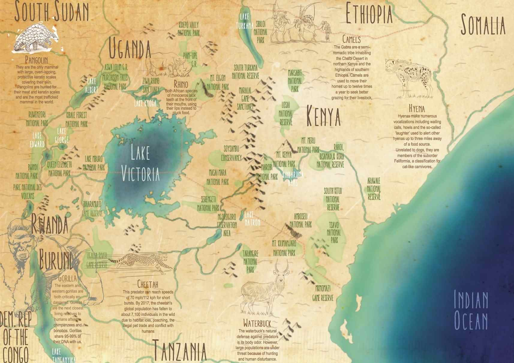

Boda? An African term for motorcycle. The Babes? Three friends whose paths rarely cross. Tiffany's ridden more miles on a motorcycle than any woman ever. Nicole designs motorcycle parts. Lorraine has no trouble getting the two to join her in Africa for a fun boda jaunt. The goal? To buy and deliver a motorbike to Julius Obwano, award winning warden of Murchison Falls National Park. A cinch!
But when the fourth character, The Bike, develops a 'personality disorder', chaos ensues. Join the Babes. They'll be dancing to sizzling hot African music in this jaunty 90 minute road movie.
Tiffany Coates, British, is the world's foremost female motorcycle adventurer having crossed every continent solo or with a hapless pillion rider on the back. She has gone to higher altitudes and ridden more kilometers than any other woman. Tiffany was the first motorcyclist, male or female to cross Asia on all three classic routes. A freelance international guide, she is always on the lookout for new places to explore.
When not out on a bike, Tiffany lives at Lands End, England and is a community worker. To see where Tiffany is now and to book her Uganda tour or one of her other tours, check out: TiffanysTravels.co.uk
Lorraine, a British American, currently resides in Tanzania, continuing to live the life of the adventurer documented in her film, photographs, magazine articles and books.
In Sudan, Lorraine bought a camel and crossed the Libyan Desert with local herders caravanning 200 camels on their way to market in Egypt.
In Kenya, Lorraine and her canine sidekick, set off on a three year odyssey exploring the bonds Africans have with their dogs while visiting the Gabra tribe in the far north desert to hippo laden Lake Manyara in Tanzania.
After 12 years in Africa, Lorraine headed west, bought a van, once used as a surveillance vehicle, turned it into a mobile studio, and drove the length of the Americas with her two dogs.
Lorraine arrived at the southernmost tip of South America, Ushuaia, Argentina five years later, made a u-turn and headed north to Chile. A former campsite pulled at her to return and when she did, she bought a nearby cabin overlooking the Pacific Ocean. For the first time Lorraine had roots calling her home from her extensive travels motorbiking in Uganda.
But Africa pulled back hard. Ten years later, Lorraine flew her four Chilean dogs to Tanzania and found herself on a verandah overlooking the Indian Ocean. Lorraine is taking a break from motorbikes to embark on a new adventure. Her current obsession? Re-building a local wooden boat that’s almost ready to set sail. Destination? Find out in her newest videos at: youtube.com/@lorrainechittock
Adventure motorcycling has been in Nicole's blood since her first adventure ride to Sedona and North Rim of the Grand Canyon in 2009. But with two young kids at home, she was encouraged to use her single-mom-time creatively. Keeping her rides short, Mama Nicole gave birth to Rugged Rider, a dual sport motorcycle accessories business selling her own designs. She also became managing editor for Adventure Motorcycle Magazine.
Global travel for Nicole opened up in 2017 with the filming of Boda Babes Ride in East Africa, followed by back to back trips in Egypt and Indonesia. On her return to California, she became a caregiver for her ailing father, then helped rebuild after the Pacific Palisades fire.
With her two kids now grown, Nicole has launched out on her motorcycle for a new life chapter. Currently, you will find her exploring Mulege in Baja, as she makes her dream of building community come true. Follow her adventures at: youtube.com/@nicoleespinosa
has been seen by over 2000 people in theaters, private screenings and motorcycle meets in the following cities around the world. It's time to show it online!
